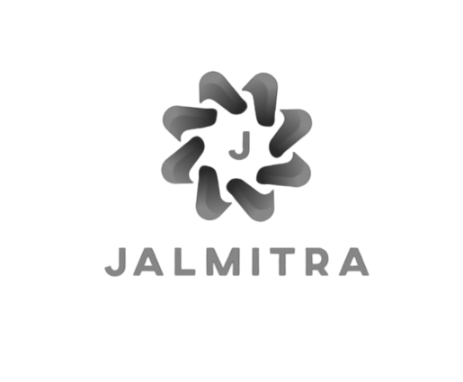

Home
JalMitra
DashBoard
Reward Store
Contact us
Groundwater Predictions
for a Sustainable
Tomorrow
Know Today's Water Level, Ensure Tomorrow's Safety
.png)
Preserve
Every drop counts! Groundwater is a precious resource that sustains life, agriculture, and industry. With rapid depletion, it's more critical than ever to act responsibly. By conserving groundwater today, we secure a future where clean water is available for all. Small actions like rainwater harvesting, efficient irrigation, and reducing waste can make a big impact. Together, we can ensure that future generations inherit a thriving, water-secure world. Start saving water now — your efforts matter!
JalMitra

JalMitra
Need real-time insights into groundwater levels and personalized recommendations? Our intelligent chatbot can help! Click below to access instant predictions on groundwater levels, receive preventive action plans to avoid depletion, and get crop suggestions based on local soil quality and climate. Take the next step toward sustainable water management and smarter farming decisions
Meet JalMitra - Your Groundwater Companion!
Get
Personalized
Water
Insights!
Get
Personalized
Water
Insights!
JalMitra is an intelligent chatbot designed to help you make informed decisions about water conservation and groundwater management. With real-time predictions based on rainfall, soil quality, and other factors, JalMitra provides you with accurate groundwater level forecasts